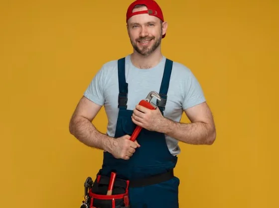
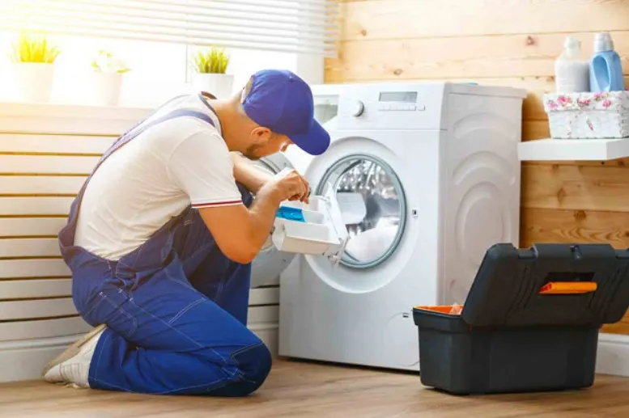
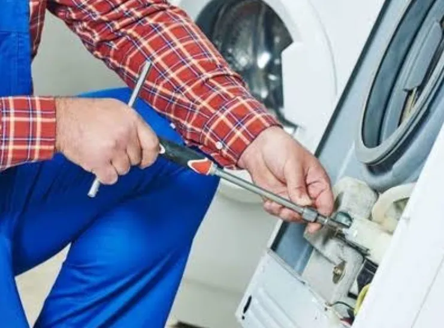
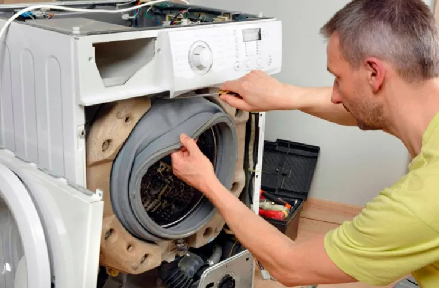

Наши преимущества
Мы работаем с 2010 года. Наши мастера имеют опыт более 15 лет. Ремонт стиральных машин в Москве недорого — звоните нам!

Почему выбирают нас?
- Выезд мастера за 1 час
- Гарантия до 2 лет
- Оригинальные запчасти
Популярные услуги

Замена подшипника
Стоимость от 2500 рублей

Замена ТЭНа
Стоимость от 1800 рублей

Ремонт барабана
Стоимость от 3000 рублей
Отзывы клиентов
«Отличный мастер, всё починил быстро!» — Анна, Москва
«Рекомендую, цены адекватные» — Сергей, Москва
Контакты
Телефон: +7 (495) 123-45-67
Email: info@remont-mashin.ru